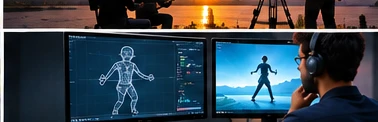

Concept preview — not final
Explainer Videos
Some Ideas Are Hard to Say Simply.
We Make Them Easy to Follow.
Explainer videos that turn a complex product, process or idea into something an audience can understand at a glance.

Concept preview — not final01 / What an Explainer Video Can Do
Communicate Complex Ideas, Clearly.
Where a product, process or idea takes more than a few words to explain, an explainer video can carry that explanation through pacing, visuals and a clear narrative line.
Depending on what the subject calls for, this can take a live-action, animated or hybrid form — the format follows the content, not the other way round.
02 / Examples
Examples
Review note: this page has no approved explainer-video project credits yet. Example work will be added here once specific projects are confirmed and cleared for publication — nothing is listed as a placeholder stand-in.
/ Begin a conversation
Have Something Worth Explaining?
Tell us what you need your audience to understand.
Get in Touch ↗